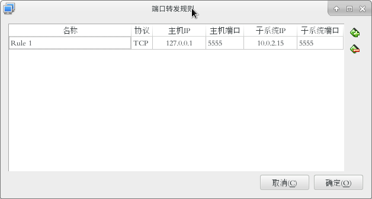
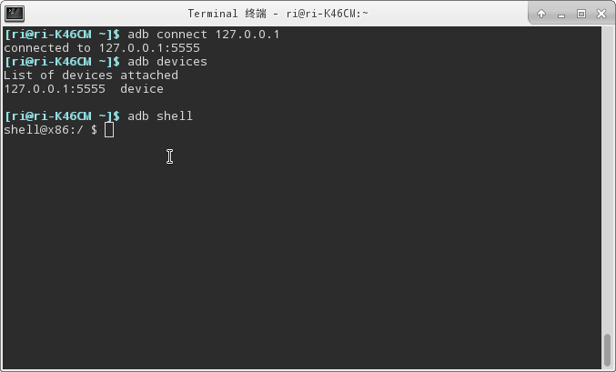

只要能通过ip地址找到虚拟机中的系统，那么就可以干很多事，比如：
adb调试，或者使用nc命令传输一些文件或文件夹，等等。。
下面以adb连接virtualbox中的android-x86进行调试为例：
安装android-x86
首先你要安装好android-x86，这个就不多说了，网上很多教程
不过值得一提的是，在安装好之后，进入系统时，如果没有点技巧会卡在欢迎界面，安装时没有截图，就不上图了
解决方法是：在欢迎界面，状态栏下面开始，依次：
左上-右上-右下-左下
用鼠标点击一遍，就会自动跳过欢迎界面了
查看android-x86的ip地址
本例中使用的是virtualbox默认的网络配置
进入android-x86系统，打开终端模拟器
接着输入“su”命令获取root权限，会弹出提示，自己看着选
获取root后，终端提示符会变成”#“
输入”netstat“命令，会打印出一些网络配置和ip地址信息，本例中的android-x86的ip地址为：”10.0.2.15”
记住这个ip，后面会用到
配置虚拟机系统的网络的端口转发功能
在vbox中在要配置的系统：android-x86上右键，选择设置
在出现的设置窗口的左侧菜单组中点击网络项，其他的不用管，直接接着点击端口转发按钮：
接着在新窗口中点击右侧”+“按钮，添加一条规则：

其中主机ip最好填本机host，端口随便，不过如果是adb连接的话，最好用5555，因为adb connect默认是5555端口
子系统ip，就填第二步中使用netstat得到的ip地址，端口随意
配置好之后点确定，重启虚拟机中的android-x86
adb连接android-x86系统
启动你的android-x86后，打开终端模拟器，输入：
1 | su |
命令解释：
su：获取root权限，要执行下面的命令必须要root身份，否则无效
setprop…：设置一个安卓系统的adb配置，即使用网络进行adb调试
stop adbd和start adbd：重启adb服务
这样android-x86就配置ok了，在你的主机(非虚拟机)中，打开一个命令行(cmd/terminal)，输入：
1 | adb connect 127.0.0.1 |
连接成功时会提示：
1 | connected to 127.0.0.1:5555 |
接着输入adb devices查看已连接设备：
1 | List of devices attached |
注意”127.0.0.1:5555“后面的提示，如果是device，则是链接成功，否则如果是offline就是没有连接上
最终输入：adb shell
进入android-x86终端控制，这条命令成功就意味着绝对是成功了
下面是这几步的图：

总结：
主要使用了virtualbox的端口转发功能，这个功能会把所有访问本机的某个设定好的端口的数据全部重定向到虚拟机系统的设置好的端口
这样就实现了对本机5555端口(本例)的访问，其实访问的是android-x86的5555端口